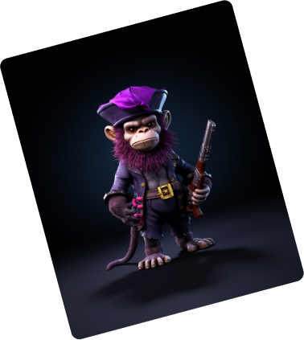
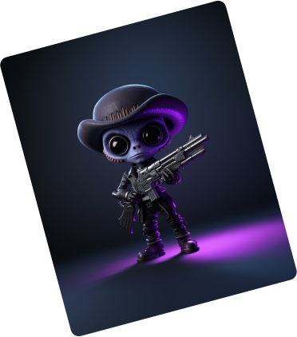

<!DOCTYPE html>
<html lang="pt-br>
  <head>
    <meta charset="UTF-8" />
    <meta name="viewport" content="width=device-width, initial-scale=1.0" />
    <title>GSAP</title>
    <link rel="stylesheet" href="/scss/main.css" />
  </head>
  <body>
    <section class="s-others"></section>
    <section class="s-nfts js-section-nft">
      <div>
        
        
        
        
      </div>
    </section>
    
    <section class="s-others"></section>

    <!-- GSAP -->
    <script src="https://cdn.jsdelivr.net/npm/gsap@3.12.5/dist/gsap.min.js"/></script>

    <!-- ScrollTrigger -->
    <script src="https://cdnjs.cloudflare.com/ajax/libs/gsap/3.12.5/ScrollTrigger.min.js"></script> 

    <script>
      const sectionNFT = document.querySelector(".js-section-nft");

      const nft01 = document.querySelector(".nft-01");
      const nft02 = document.querySelector(".nft-02");
      const nft03 = document.querySelector(".nft-03");
      const nft04 = document.querySelector(".nft-04");


      function startAnimation(elem, xPosition) {
        gsap.to(elem, {
            x: xPosition,
            duration: 2,
            // opacity: 1,
            ease: "back.out(1.7)",
            scrollTrigger: {
                trigger: sectionNFT,
                start: 'top center',
                end: 'bottom center',
                markers: true,
                scrub: true /* muda a animação de acordo com o scroll*/
            }
        })
      }
      startAnimation(nft01, -420);
      startAnimation(nft02, -125);
      startAnimation(nft03, 125);
      startAnimation(nft04, 420);

    </script>
  </body>
</html>
